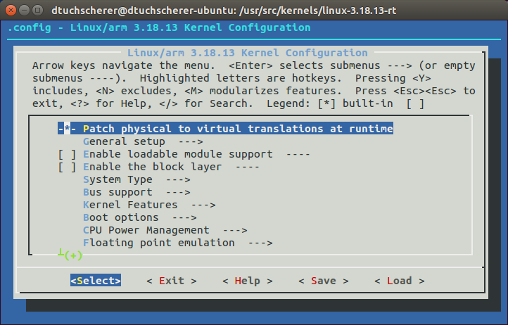
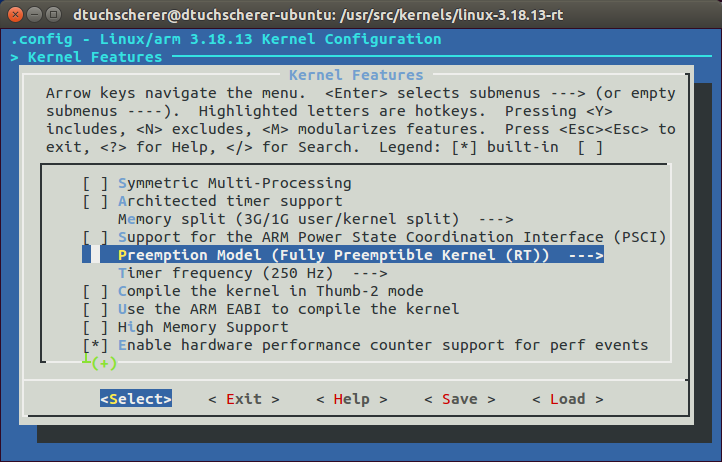

Enable real-time capabilities of the linux kernel on the Raspberry PI
Embedded systems often need hard realtime capabilities for driving actuators or reading out sensor data at a given time. This guideline shows how to apply the realtime kernel from OSADL on a Raspberry PI (RPI) v2. We will go through downloading the sources, cross-compiling the kernel on a PC architecture and finally flashing it on the RPI.
I'm cross-compiling the kernel on an Intel i7 CPU with 8 GB of RAM in Ubuntu as my host system, because it will compile a lot faster than compiling the kernel on the RPI itself. As embedded device I'm using a Raspberry PI v2 Model B.
Downloading and Patching
There are several possible kernels you can use for building a kernel with PREEMPT RT. The easiest way to get a realtime kernel running on the RPI is to use the raspberry kernel from their GitHub repositories. Another way is to use the Vanilla kernel, but you have to add all extras and the Raspberry firmware by yourself. In this guide I will describe the way for patching and building the realtime kernel with the kernel source from the GitHub repository of Raspberry. I will try to release a guide for patching and running a Vanilla kernel with PREEMPT RT patch on the RPI soon.
Download the Raspberry kernel from GitHub:
cd /usr/src/
mkdir kernels
cd kernels
git clone --depth=1 https://github.com/raspberrypi/linux
Look for the version of the kernel. You will find the information within the Makefile and it should look something like:
VERSION = 3
PATCHLEVEL = 18
SUBLEVEL = 11
So in my case I will need the realtime patch 3.18.11:
cd /usr/src/kernels
sudo wget https://www.kernel.org/pub/linux/kernel/projects/rt/3.18/older/patch-3.18.11-rt7.patch.xz
If your kernel version differs from the one described in this guide, search for the appropriate kernel patch on https://www.kernel.org/pub/linux/kernel/projects/rt/ and download it like described above.
Rename the folder you cloned from GitHub, because we will patch it in the next step:
cd /usr/src/kernels
sudo mv linux linux-rt
Go into your linux-rt directory and patch it with the downloaded RT PREEMPT patch:
sudo -i
cd /usr/src/kernels/linux-3.18.11-rt/
sudo xz -dc /usr/src/kernels/patch-3.18.11-rt7.patch.xz | patch -p1
Note: This step has to be executed as root explicitly (sudo -i).
Cross Compiler
There is more than one ARM cross compiler for Ubuntu Linux. We will use the provided compiler from the Raspberry Pi tools section on GitHub.
cd /opt/
git clone git://github.com/raspberrypi/tools.git --depth 1
Note: I renamed the cloned tools folder to rpi-tools. So my cross-compiler is now located under /opt/rpi-tools.
Configuration
Now comes the exciting part: Configuring the kernel! But before you are able to configure the kernel and activate the realtime capabilities, make sure you installed all necessary dependencies and get the linux kernel ready to compile:
sudo apt-get install libncurses5-dev
make mrproper
Set an environment variable for the prefix of the cross compiler toolchain:
export CCPREFIX=/opt/rpi-tools/arm-bcm2708/gcc-linaro-arm-linux-gnueabihf-raspbian-x64/bin/arm-linux-gnueabihf-
Make an initial config for the Raspberry build:
sudo make ARCH=arm CROSS_COMPILE=${CCPREFIX} bcm2709_defconfig
In the same terminal where you exported the environment variable run your first make command to configure your realtime kernel:
KERNEL=kernel7
sudo make ARCH=arm CROSS_COMPILE=${CCPREFIX} menuconfig
This make target will start up a graphical interface shown below:

If you configured the ARM build correctly the Preemption Model of the PREEMPT patch can be found under Kernel Features and then Preemption Model like shown in the following image:

Choose Fully Preemptible Kernel (RT) here.
Note: If this option is not available the patch was not successful and something went wrong. Try to patch the downloaded kernel once again.
Compiling
You can now compile the kernel on the PC. If you are working on a multi-processor platform enable parallel jobs for a quicker build switching on -j #n where #n is the number of parallel jobs that will be used. This should be 1.5 times your number of cores. Using this option makes the build about 48% faster on a modern Intel/AMD processor. Now you can imagine how long it would take to compile the kernel directly on the RPI itself (more than 3 hrs I guess).
For the raspberry kernel simply execute the following commands:
cd /usr/src/kernels/linux-rt
sudo make ARCH=arm CROSS_COMPILE=${CCPREFIX} zImage modules dtbs -j5
After successful compilation the compiled kernel is located under arch/arm/boot/.
Flash the compiled kernel
After compiling the kernel we can flash the image onto the RPI. First, plug in your SD card from RPI and type in the following command for listing all drives:
lsblk
You should see something like this:
NAME
mmcblk0
|-mmcblk0p1
|-mmcblk0p2
Install the modules of the compiled kernel. Make sure you're executing the command from your kernel folder:
sudo make ARCH=arm CROSS_COMPILE=${CCPREFIX} INSTALL_MOD_PATH=/media/dtuchscherer/13d368bf-6dbf-4751-8ba1-88bed06bef77/ modules_install
Back up your old kernel and copy the realtime kernel onto the SD card:
cd /usr/src/kernels/linux-rt
sudo cp /media/dtuchscherer/boot/$KERNEL.img /media/dtuchscherer/boot/$KERNEL-backup.img
sudo scripts/mkknlimg arch/arm/boot/zImage /media/dtuchscherer/boot/$KERNEL-rt.img
sudo cp arch/arm/boot/dts/*.dtb /media/dtuchscherer/boot/
sudo cp arch/arm/boot/dts/overlays/*.dtb* /media/dtuchscherer/boot/overlays/
Finally, adjust the config.txt file in /boot/config.txt and add the following line:
kernel=kernel7-rt.img
Running and Testing
After you transferred the kernel onto the RPI, plug in your SD card and boot the controller. Test if the kernel and patching of PREEMPT RT was successful with the following command:
uname -a
It should show something similiar to this:
Linux raspberrypi 3.18.14-rt7-v7+ #1 SMP PREEMPT RT Fri Jun 12 12:08:45 CEST 2015 armv7l GNU/Linux
There are tools for testing if the patch was successful. Log in to your RPI over SSH and clone the following GitHub repository:
ssh pi@141.7.28.126
git clone git://git.kernel.org/pub/scm/linux/kernel/git/clrkwllms/rt-tests.git
cd rt-tests
make
In a terminal execute cyclictest:
cd rt-tests
sudo ./cyclictest -p99 -t -n
Where -p defines the priority, -t starts one thread per core and -n is important for using nanosleep.
Note: Per default the time is in microseconds.
This measurement isn't useful as long there is no high processor load so we can measure if all tasks were executed in real time. Open another terminal and start hackbench:
cd rt-tests
sudo ./hackbench -l5000
The output should look something like this after executing hackbench:
# /dev/cpu_dma_latency set to 0us
policy: fifo: loadavg: 0.63 1.40 3.63 1/114 2936
T: 0 ( 2933) P:99 I:1000 C: 6287 Min: 18 Act: 25 Avg: 30 Max: 71
T: 1 ( 2934) P:99 I:1500 C: 4191 Min: 18 Act: 44 Avg: 29 Max: 78
T: 2 ( 2935) P:99 I:2000 C: 3143 Min: 19 Act: 25 Avg: 30 Max: 70
T: 3 ( 2936) P:99 I:2500 C: 2515 Min: 18 Act: 25 Avg: 28 Max: 69
Comparison of unpatched and patched kernel
Now it is your turn. What will be the behavior if you execute cyclictest and hackbench with the same settings on an unpatched kernel?
Remark: There are mainly two differences.
Important: Real-Time != fast
Troubleshooting
Raspberry 2 freezes on execution of cyclictest and hackbench
Due to the execution of cyclictest for measuring and hackbench for simulating a high system load it can occur the RPI freezes completely. This is not a problem with the PREEMPT patch directly. The've changed something in the implementation of the USB driver since kernel version 3.18.
There is a hotfix by adding the following options in front of your /boot/cmdline.txt:
dwc_otg.fiq_enable=0 dwc_otg.fiq_fsm_enable=0 dwc_otg.nak_holdoff=0